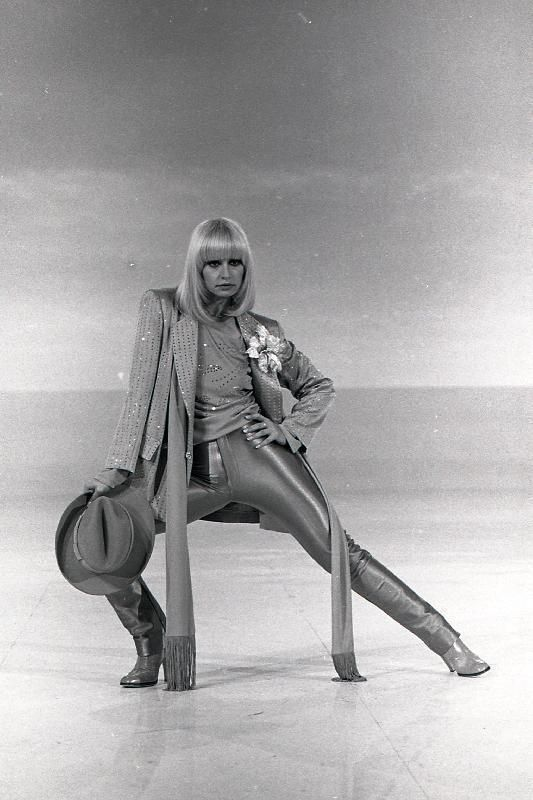
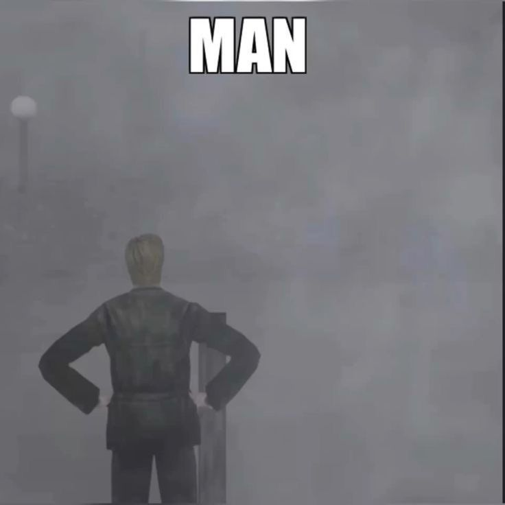

en paseos
21 noviembre
¿Cómo sientes que ha pasado el año?
Dentro de muy poco estaremos cruzando diciembre, y se acerca el año nuevo. En lo personal, los números se van sintiendo irreales al llegar: 2024, 2025, 2026, recuerdo que de chico pasaba mucho tiempo y yo no me acostumbraba a escribir el encabezado en la escuela con el número correcto del año nuevo; también todo avanza más rápido de lo que se suele asumir, pero lo común fuera de las redes no se ve tan afectado - o al menos siento que haber ido al Golfo di Napoli habría sido una experiencia similar hace veinte años que ahora. Y gracias Dios que se mantiene así, dentro de lo que cabe. Podré estar como rata viendo reels de Instagram, pero cómo aprecio las actividades que no se vean tan afectadas por lo nuevo, lo más cercano dentro de mi mundo flojito a tener una cápsula del tiempo de ambientes hermetizados, alejados de las treinta mil inteligencias artificiales y los nuevos labubus del nuevo mundo.
23 noviembre
En días, a veces, me da un extraño optimismo. Hoy fue luego de ir al parque a entrenar. Me llevé mis audífonos por primera vez, milagro que no estén rotos luego de tanto abuso de mi espalda dormida, y escuché música mientras entrenaba. Qué buen sentir. Pocas las ocasiones que disfruto mi soledad, pero cómo me gusta observar, vivir. Hice algo de ejercicio (como una hora) junto a Doja Cat, Buena Vista Social Club, y finalizando con Bowie. ¿Qué mejor?
Cómo te habrá ido hoy, Daniela? Todo un día de necesario estudio, pues mi presencia últimamente digamos que no ha sido el mayor de los beneficios para tu productividad y bienestar académico. Hoy igual traté de acompañarte -poco- en la distancia, pues igual estudié un ratito, que todavía debo estudiar para sacarme la media con buena nota y aprovechar de explotar lo que pueda del NEM. Sigo con química, que es lo que me ha llamado la atención al hacer un tiempo para estudiar últimamente, y he descubierto un preu (luego te lo muestro) que me vendría mejor para estudiar, que después de todo debo priorizar resolución de ejercicios de lo que me vaya a salir en exámenes libres, PAES, y no en el grosor intelectual/académico de lo que requiera estudiar para ello como si sí estuviera en la media. Qué horroroso pensar en lo que se vendrá mucho después, de ser que mi vida sí siga el camino de estudiar una ingeniería o ciencia natural - igual es un privilegio pensarlo. Hoy ha sido un día largo, ahora que lo pienso: me levanté… viendo reels… por horas… bueno, omitamos esa parte, luego jugué RE4, que ya terminé el capítulo 10 (de 16), estudié, leí un poco de uno de los libros comprados que tengo por leer, entrené, me tomé su buena Monster blanca (cómo me gusta… hmph...), tomé mucho té… Quise ver Sex and the City pero no es lo mismo sintigo, hay actividades que ya directamente las vinculo a ti - me ando malacostumbrando en lo fácil que es ahora el poder vernos y compartir tiempo juntos. Y con cómo inicié la entrada, continúo el sentir que me empalaga periódicamente: el extraño, fresco optimismo. Todo va tan bien - como lo que resulta de quienes se esfuerzan por cumplir un esforzado objetivo: una relación duradera. Es un buen sentir.
 La Carrà. No tiene relación alguna con lo escrito, sólo me cae de maravilla. Las mujeres son las figuras a seguir. Siempre te lo suelo decir: ahora mismo con la Carrà, cuando tu mami nos cuenta historias - que por cierto, reina revolucionaria resultó ser, ídola -, mujeres de series, películas, al final son quienes nos dejan las mayores de las impresiones, con sus palabras de voz cuyo eco nos visita en días espontáneos. La única excepción acá será Arthur Morgan, debo añadir: personaje memorable, redentivo, complejo, adelantado a su tiempo. Best man.En fin,
por naturaleza, con la nueva calma y con los nuevos días de suave digestión, sólo queda preguntarse:
¿Así se sentirán las personas comúnes?
Debo admitirte que mi perspectiva viene tintada en los lentes de mi vida dentro del antiguo trabajo. Una situación de obrero precarizado es lo único que necesita un joven para acelerar su consciencia de clase, madurez, pero a su vez el nato pesimismo. Ahora dentro de todo lo que me cabe en el alma no tengo mucho quejar, que a todo le puedo encontrar solución - solución dentro de todo lo que mi flojito ser me permita lanzarme. Llevando semanas así, sólo me queda la pregunta...
¿Qué hay para afligirse?
Te recuerdo nuestra primera salida a El Quisco, en la cual casi nos quedamos sin bus de vuelta. A todo le
podemos encontrar vía, y nada sino la muerte se nos escapará de nuestras manos. Uno adquiere con el tiempo un raro gusto
de gustarle las dificultades, que al final es lo que nos da la distinción de humano: sufrido, en algo,
descansado, cansado, esforzado, flojito.
Hablando de flojear flojito, ahora sí extraño tu camita y tu compañía.
Mi primer caso de... ¿racismo?
Una vez, hace como dos años, fui al parque a entrenar y me encontré con dos peruanos. Nos saludamos y empecé a conversar con ellos mientras hacíamos ejercicio. Uno de ellos era normalito y otro se veía más fuerte, y al parecer quería como irse a Estados Unidos a ser parte del ejército - plan dudoso porque necesitas una Green Card y saber hablar, escribir, y leer inglés de manera fluída. En algún punto de la conversación llegamos a los idiomas y creo recordar que dije que yo podía manejar al menos el inglés.
“ Así son ustedes blancos que son más inteligentes. ”
Ah, bueno... hay una primera vez para todo.
¿Qué… privilegio? Bueno, puta que por lo menos debía tener uno solo en la vida, wn. Pero sí, privilegio de jamás haber escuchado antes hasta ese día una opinión basada en mi color de piel. Primera vez que había escuchado a alguien hablar de algo usando como fuente/argumento mi piel - mi piel amarilla, roja, morena, blanca y todo a la vez. Recuerdo que hubieron más comentarios de esa categoría, y hasta el haberme sentido incómodo porque no estaba acostumbrado a escuchar opiniones usando como argumento la piel que me rodea la bolsa de huesos, nervios, carne y sangre que soy.
Qué feliz pensar que en sólo horas nos veremos. Qué triste pensar en que me van a bombardear pronto a Papuchi.
 MAN (James) (1994)
Sigo pensando en tu mención sobre la arte terapia luego de haberte hablado de cómo me hace sentir el crear videos de Minecraft y el pintar, a lo cual debería volver a hacer una de las dos pronto, pues cómo disfruto. Incluso escribir se siente así, pero la sonrisa involuntaria y jocosa no se adueña de mi rostro con la misma viciosidad. Volveré...
Deberías escuchar Buena Vista Social Club. Pronto te haré una playlist para que escuches lo que escucho y seas testigo del orígen de mi gusto hacia esa vibra de obras, de canciones. Quizá deba dejar el escrito hasta acá, pues ya siento cómo se me caen los párpados, y mi edad me da el recordatorio de lo cerca que estoy de esos metros bajo la tierra. MMMmmmmmmmmmmmmmmmmmmmmmmmmmmmmmmmmmmmmmmmmmmmmmmmmmmmmmmmmmmmmmmmmmmmmmmmmmmmmmmmmmmmmmmmmmmmmmmmmmmmmmmmmmmmmmmmmmmmmmmmmmmmmmmmmmmmmmmmmmmmmmmmmmmmmmmmmmmmmmmmmmmmmmmmmmmmmmmmmmmmmmmmmmmmmmmmmmmmmmmmmmmmmmmmmmmmmmmmmmmmmmmmmmmmmmmmmmmm
Ahí lo viste en primera fila, en vivo. Quedo con los ojos cerrados y las manos en el teclado.
Buenas noches, mi tralalerita. Hablando de tralaleritos, me da cosita mi primito chico, canta mucha canción de brainrot, y él tiene a su hermano (por unos escasos años mayor), el cual le hace compañía igual a ver sus brainrots.
Cuando me da cosa es pensar en esas infinitas alternativas de los tiempos pasados. Irse al parque, salir para no quedarase en casita, la exploración y curiosidad como motores principales. Qué serán de los nuevos niños... En fin.eeeeeeeeeeeeeeeeeeeeeeeeeeeeeeeeeeeeeeeeeeeeeeeeeeeeeeeeeeeeeeeeeeeeeeeeeeeeeeeeeeeeeeeeeeeeeeeeeeeeeeeeeeeeeeeeeeeeeeeeeeeeeeeeeeeeeeeeeeeeeeeeeeeeeeeeeeeeeeeeeeeeeeeeeeeeeeeeeeeeeeeeeeeeeeeeeeeeeeeeeeeeeeeeeeeeeeeeeeeeeeeeeeeeeeeeeeeeeeeeeeeeeeeeeeeeeeeeeeeeeeeeeeeeeeeeeeeeeeeeeeeeeeeeeeeeeeeeeeeeeeeeeeeeeeeeeeeeeeeeeeeeeeeeeeeeeeeeeeeeeeeeeeeeeeeeeeeeeeeeeeeeeeeeeeeeeeeeeeeeeeee
Fin de la entrada. Espero que te guste, incluso con mis palabras de no bien camuflado sueño.
Te quiero con lo que del corazón mío, latir le quede, Daniela Andrea.